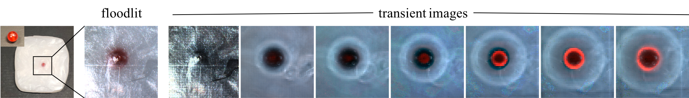
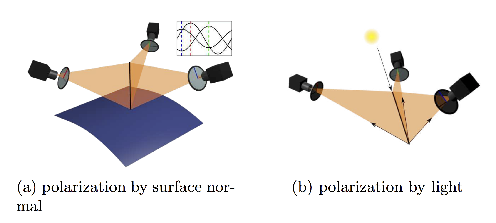
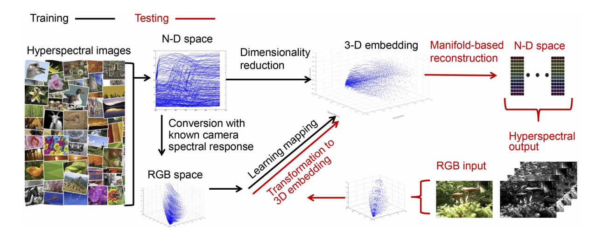
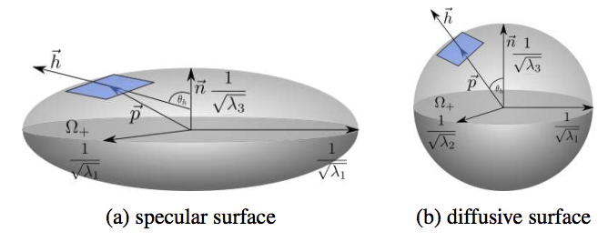
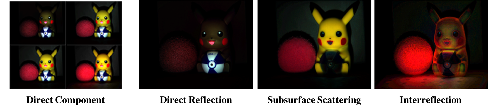
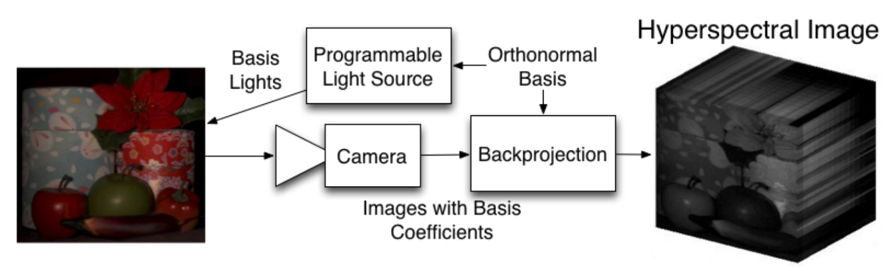

About Me
- I am a computer vision researcher recently graduated from Tokyo Institute of Technology
- I work as a researcher at the National Institute of Informatics for four years; my research coverage include image acquisition system, physic-based computer vision and spectral reconstruction
- Formerly I had three year experiences as a software engineer working on the online securities trading platform
Publication List
-
A Data-Driven Approach for Direct and Global Component Separation from a Single ImageShijie Nie, Ilyes Kacher, Lin Gu, Art Subpa-asa, Imari Sato, Ko NishinoAsian Conference on Computer Vision, 2018
-
Separating the Direct and Global Components of a Single ImageArt Subpa-asa, Ying Fu, Yinqiang Zheng, Toshiyuki Amano, Imari SatoJournal of Information Processing, Volume 26, 2018
-
Variable Ring Light Imaging: Capturing Transient Subsurface Scattering with An Ordinary CameraKo Nishino, Art Subpa-asa, Yuta Asano, Mihoko Shimano, Imari SatoProceedings of the European Conference on Computer Vision (ECCV), 2018
-
Polarimetric Three-View GeometryLixiong Chen, Yinqiang Zheng, Art Subpa-asa, Imari SatoProceedings of the European Conference on Computer Vision (ECCV), 2018
-
From RGB to spectrum for natural scenes via manifold-based mappingYan Jia, Yinqiang Zheng, Lin Gu, Art Subpa-asa, Antony Lam, Yoichi Sato, Imari SatoIEEE International Conference on Computer Vision (ICCV), 2017
-
A microfacet-based reflectance model for photometric stereo with highly specular surfacesLixiong Chen, Yinqiang Zheng, Boxin Shi, Art Subpa-asa, Imari SatoIEEE International Conference on Computer Vision (ICCV), 2017\n Journal version is accepted from TPAMI
-
Light transport component decomposition using multi-frequency illuminationArt Subpa-asa, Yinqiang Zheng, Nobutaka Ono, Imari SatoIEEE International Conference on Image Processing (ICIP), 2017
-
Direct and Global Component Separation from a Single Image Using Basis RepresentationArt Subpa-asa, Ying Fu, Yinqiang Zheng, Toshiyuki Amano, Imari SatoAsian Conference on Computer Vision (ACCV), 2016
-
Spectral Imaging Using Basis LightsAntony Lam, Art Subpa-asa, Imari Sato, Takahiro Okabe, Yoichi SatoThe British Machine Vision Conference (BMVC), 2013
-
Global object placement relation for improving 3-D scene construction from single imageArt Subpa-asa, Pizzanu Kanongchaiyos8th International Conference onElectrical Engineering/Electronics, Computer, Telecommunications and Information Technology (ECTI-CON), 2011
-
Adaptive 3-d scene construction from single image using extended object placement relationArt Subpa-asa, Natchapon Futragoon, Pizzanu KanongchaiyosProceedings of the 8th International Conference on Virtual Reality Continuum and its Applications in Industry, 2009
Education
-
Ph.D. in information processing, Tokyo Institute of Technology, Japan
2015 - 2019
Thesis: Light Transport Decomposition using Ordinary Camera and Projector
-
M.Eng in Computer Engineering, Chulalongkorn University, Thailand
2009 - 2011
Thesis: Global Object Placement Relation for Improving 3-D Scene Construction from Single Image
-
B.Eng in Computer Engineering, Chulalongkorn University, Thailand
2005 - 2009
Professional Experience
-
Research Assistant (Part-time), National Institute of Informatics, Japan
2015 - 2019
-
Technical Assistant, National Institute of Informatics, Japan
2014 - 2015
-
Application Engineer, The Stock Exchange of Thailand, Thailand
2011 - 2014
-
Interns, National Institute of Informatics, Japan
2009 - 2010
-
Teaching Assistant, Chulalongkorn University, Thailand
2009
-
Interns, IT One Limited Company, Thailand
2008